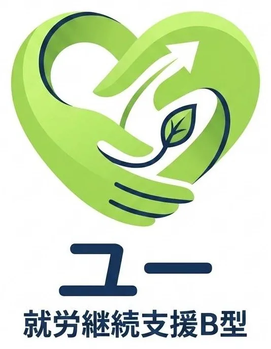
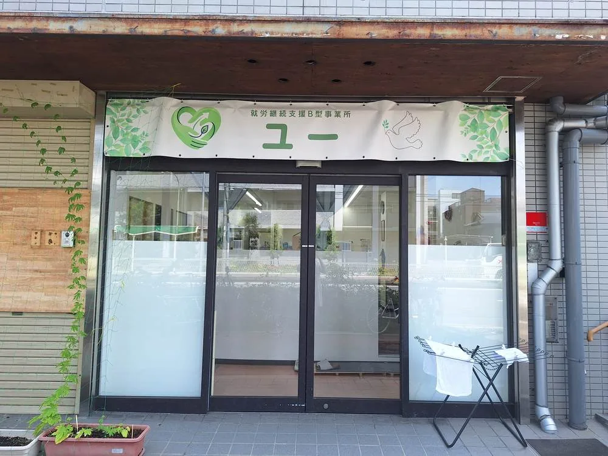
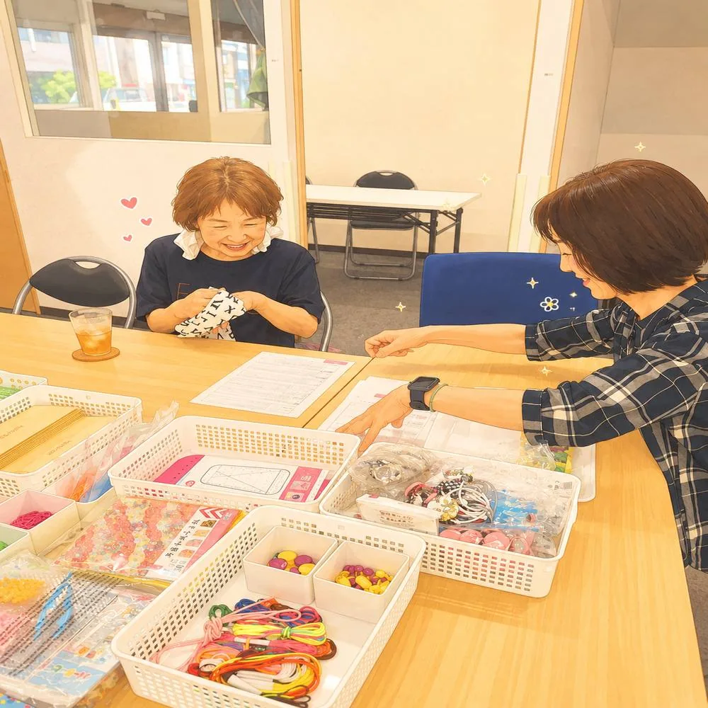
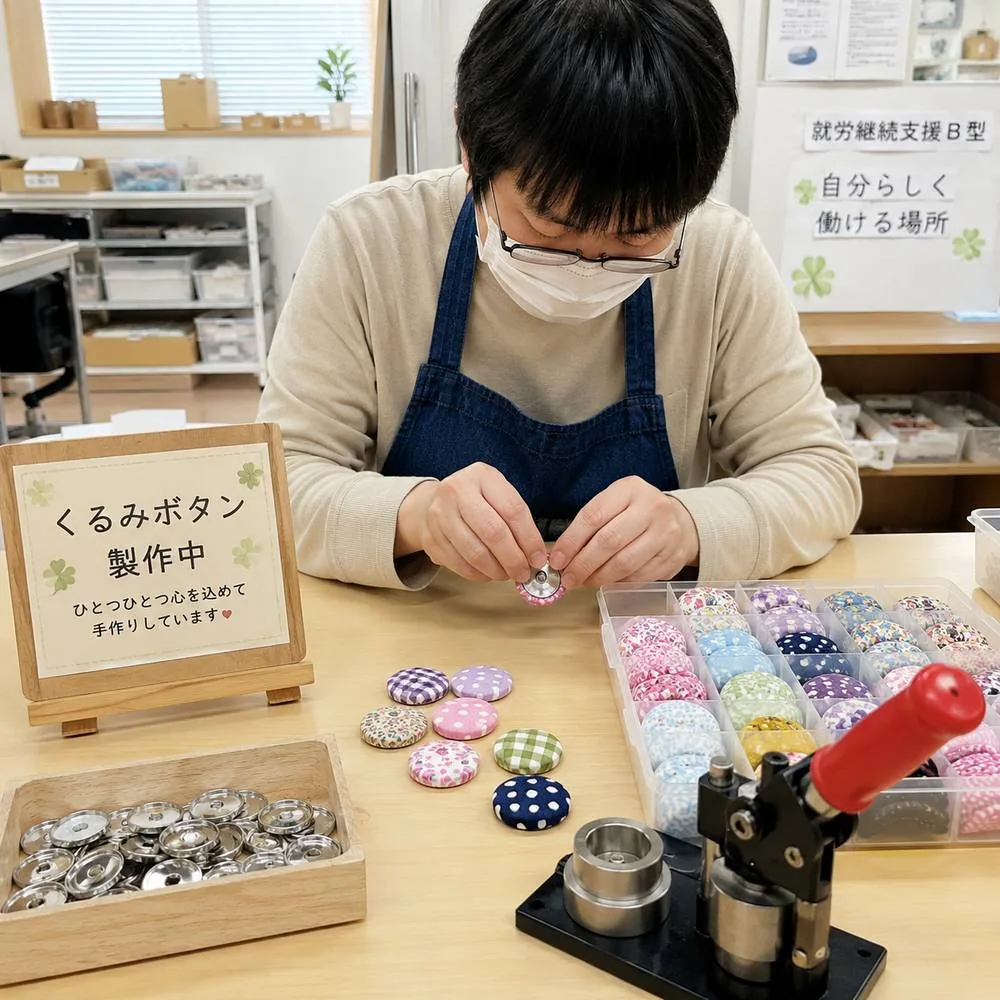
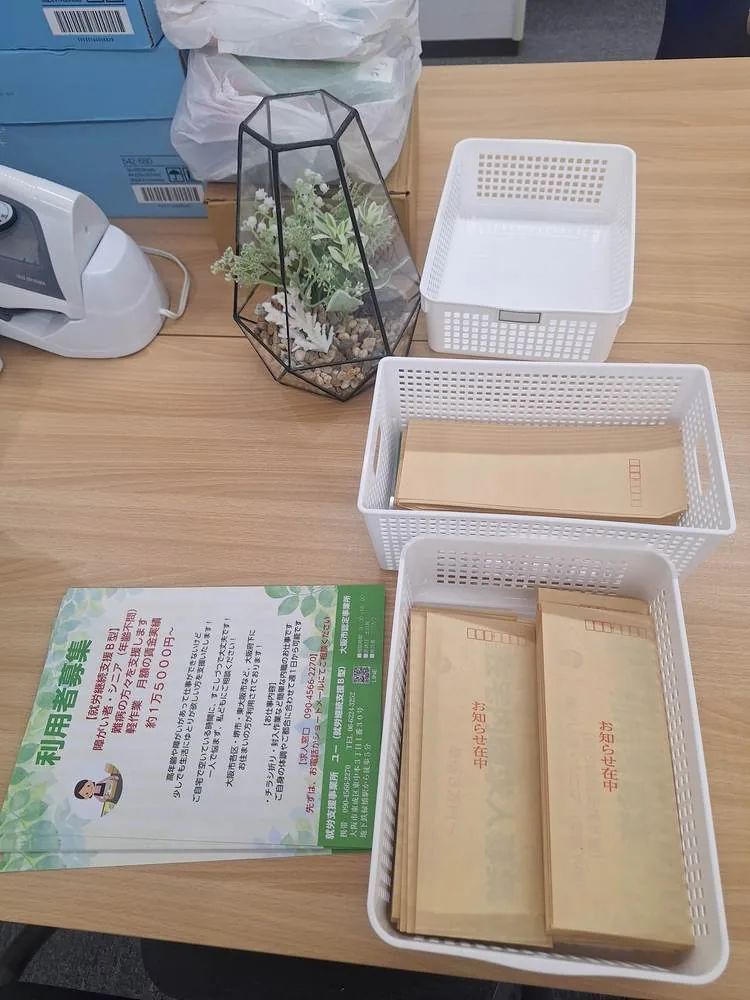
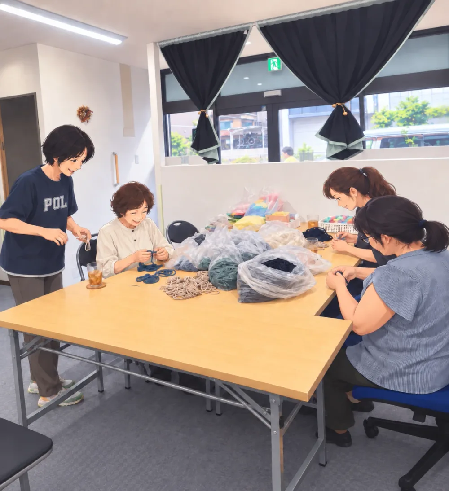
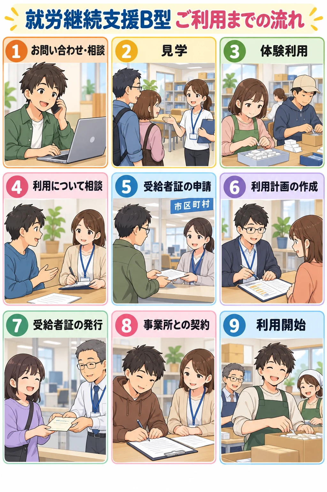
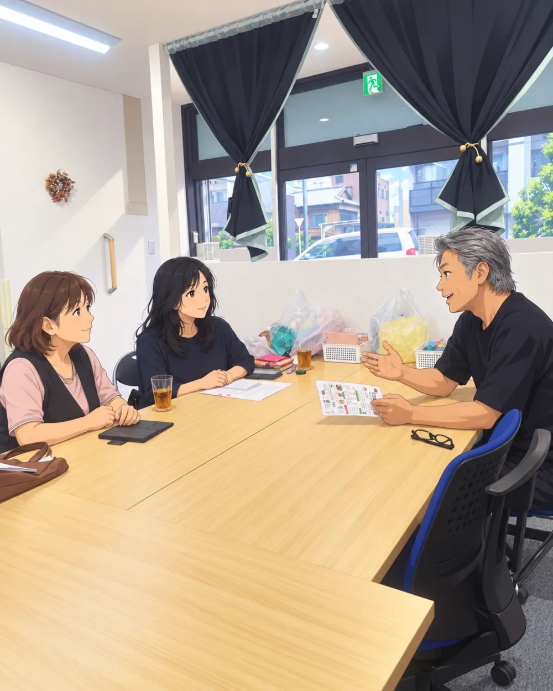

大阪市東成区の就労継続支援B型事業所
安心できる居場所、
あります。
今日も出来た!を増やしていく。
合同会社ユーは、大阪市東成区にある就労継続支援B型事業所です。働くことへの不安や悩みに寄り添いながら、一人ひとりが自分のペースで過ごし、できることを少しずつ増やしていける場所です。大阪メトロ中央線・今里筋線「緑橋駅」から徒歩5分。東成区のほか、城東区・生野区・中央区・天王寺区などからも通いやすい場所にあります。まずは見学だけでも、お気軽にどうぞ。

“普通”を目指すのではなく、あなたらしく働く。
こんなお悩みはありませんか
一人で抱え込まなくて、大丈夫です
働くこと、これからのことに不安を感じるのは、自然なことです。
失敗したらどうしよう、続けられるか不安。そんな気持ちのまま、少しずつ慣れていく方がたくさんいます。
無理に話さなくても大丈夫。自分のペースで、少しずつ周りとの距離を縮めていけます。
行き場がほしい、生活のリズムを整えたい。そんな気持ちに寄り添う居場所でありたいと思っています。
週1日、短時間からでも大丈夫。ご本人のペースに合わせて通う日数や時間を相談できます。
ご家族からのご相談も歓迎しています。スタッフが一緒に考えます。
ビーズアクセサリーやくるみボタンなど、手作業を中心に幅広く用意しています。見学で実際の様子をご覧いただけます。

私たちの理念
「安心できる居場所づくり」
働くことへの不安や悩みに寄り添いながら、一人ひとりが自分のペースで過ごし、できることを少しずつ増やしていける環境を目指しています。うまくいかない日があってもいい。ここに来れば大丈夫、そう思ってもらえる場所でありたいと考えています。
作業内容
できることを、少しずつ
大阪市東成区の就労継続支援B型事業所ユーでは、得意なことや興味のあることから、無理なく始められます。

ビーズアクセサリー制作
色とりどりのビーズを使い、アクセサリーを一つひとつ手作りしています。

くるみボタン制作
布地を選びながら作る、やさしい風合いのくるみボタンです。

折り紙
集中して手を動かす時間を大切に、丁寧な折り作業に取り組みます。

チラシ折り
正確さとスピードを少しずつ身につけていく軽作業です。
封入作業
企業様からお預かりする封入作業なども、チームで協力して行います。



これからのこと
小さな一歩が、未来につながる。
自立とは、一人ですべてを頑張ることではありません。自分に合った方法で、自分らしく生活し、自分らしい未来を選んでいくこと。私たちは、そのお手伝いをします。
ご利用までの流れ
就労継続支援B型 ご利用までの流れ
大阪市東成区の就労継続支援B型事業所ユー(運営:合同会社ユー)を、はじめてご利用になるまでの流れをご案内します。

お問い合わせ・相談
お電話またはお問い合わせフォームから、お気軽にご連絡ください。ご本人はもちろん、ご家族や関係機関の方からのご相談も受け付けています。「まだ利用するか決めていない」という段階でも大丈夫です。
見学
事業所の雰囲気や作業の様子を実際にご覧いただきます。気になることは、その場でスタッフにご質問ください。
体験利用
ご希望に合わせて、無理のない範囲で体験していただきます。実際に過ごしてみて、ご自分に合うかどうかを確かめられます。
利用について相談
体験の感想や、体調・生活リズムなどをお聞きしながら、通う日数や時間などを一緒に考えます。
受給者証の申請
就労継続支援B型の利用には、障害福祉サービスの受給者証が必要です。お持ちでない場合は、お住まいの市区町村の窓口で申請します。申請についてもご相談いただけます。
利用計画の作成
利用するサービスの内容や目標をまとめた計画を作成します。作成の方法はお住まいの市区町村やご本人の状況によって異なりますので、窓口や事業所にご確認ください。
受給者証の発行
手続きが進むと、市区町村から受給者証が交付されます。交付までの期間は、地域や状況によって異なります。
事業所との契約
受給者証が届いたら、事業所と利用の契約を結びます。サービスの内容や利用料金など、大切な点をあらためてご説明します。
利用開始
契約後、通所がスタートします。通う日数や時間は相談しながら、無理のないペースで決めていきます。
※手続きの順序や必要な書類、かかる期間は、お住まいの市区町村やご本人の状況によって異なる場合があります。上記は一般的な流れの一例です。詳しくはお気軽にご相談ください。
見学・ご相談を受け付けています
「就労継続支援B型について知りたい」「まずは事業所を見学してみたい」という方は、どうぞお気軽にご連絡ください。見学だけ、お話を聞くだけでも大丈夫です。ご本人はもちろん、ご家族や関係機関の方からのご相談も歓迎しています。
お電話:06-6224-3252
受付時間 9:30〜17:00(土日・祝日、お盆、GWを除く)
まずは、話してみませんか?
- 「働きたいけれど、まだ自信がない」
- 「自分に何ができるかわからない」
- 「まずは見学だけしてみたい」
そんなご相談、大歓迎です。見学・相談はお気軽にどうぞ。
